The control panel allows you to define, test and save TinyLaF themes. A theme is simply a collection of properties.
.theme file from your file system.
| 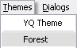 |
|
Default.theme'.
| 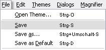 |
JButtons and JToggleButtons). For a Special Font you can specify that either the plain font or bold font shall be used or you can specify the font family, size and style. For some Special Fonts you can additionally specify the text color (see Specifying Colors).
| 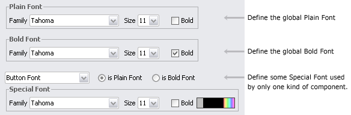 |
| 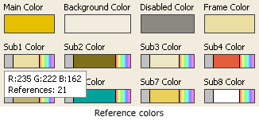 |
| 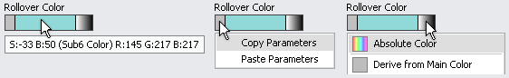 |
| - | On rollover you see the current parameter settings. A color is defined through its reference color and values for brightness and saturation. |
| - | If you click inside the grey rectangle at the left, a popup menu is displayed, allowing you to copy parameters from one color widget to another. |
| - | If you click inside the rectangle at the right, a popup menu is displayed, allowing you to choose the reference color or an absolute color. |
| - | The center rectangle shows the current color. Clicking it opens the 'Saturation/Brightness' dialog. |
| 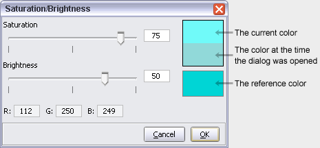 |
| 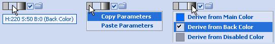 |
| - | On rollover you see the current parameter settings. |
| - | If you click inside the grey rectangle at the left, a popup menu is displayed, allowing you to copy parameters from one widget to another. |
| - | If you click inside the rectangle at the right, a popup menu is displayed, allowing you to choose the reference color. |
| - | The center rectangle shows the current color. Clicking it opens the 'Hue/Saturation/Brightness' dialog. |
| 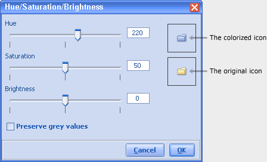 |
| Adjust Hue, Saturation and Brightness as you like. Selecting the 'Preserve grey values' checkbox means that the Brightness setting doesn't affect "grey" colors (colors with equal amounts of red, green and blue). |
.../TinyLaF/de/muntjak/tinylookandfeel/icons and rebuild tinylaf.jar.
| 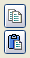 | At the top/right corner of each 'Decoration' panel there are two buttons allowing you to copy and paste parameter sets. By clicking the upper button you copy parameters (each 'Decoration' panel stores its own parameter set). Clicking the lower button will paste the stored parameter set. |
Control-click any of the following widgets:| 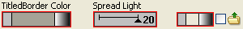 |
| 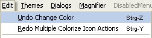 |
readme.html describes how to set the look and feel, how to specify the default theme, how to switch themes and more. To view the TinyLaF javadoc documentation, start at docs/index.html.